2015 重庆 城市景观雕塑
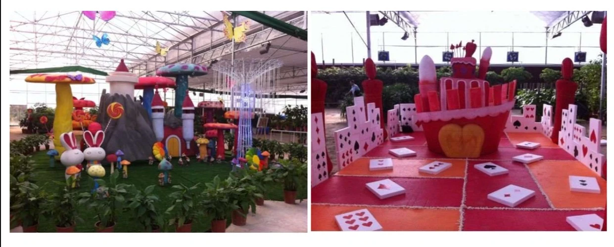
欢乐城堡主题雕塑群
2015年受重庆花木世界委托创作的亲子主题园区标志性雕塑群，以童话城堡意象点亮城市休闲空间，是早期城市景观雕塑代表作。
赵彦青 ｜ 国家一级工艺美术品设计师 · 四川省工艺美术大师 · 穆坪砚非遗传承人
项目合作 / 索取完整案例集共 32 个落地项目（按地域 / 类型筛选，点击案例锚点可独立分享）

2015年受重庆花木世界委托创作的亲子主题园区标志性雕塑群，以童话城堡意象点亮城市休闲空间，是早期城市景观雕塑代表作。
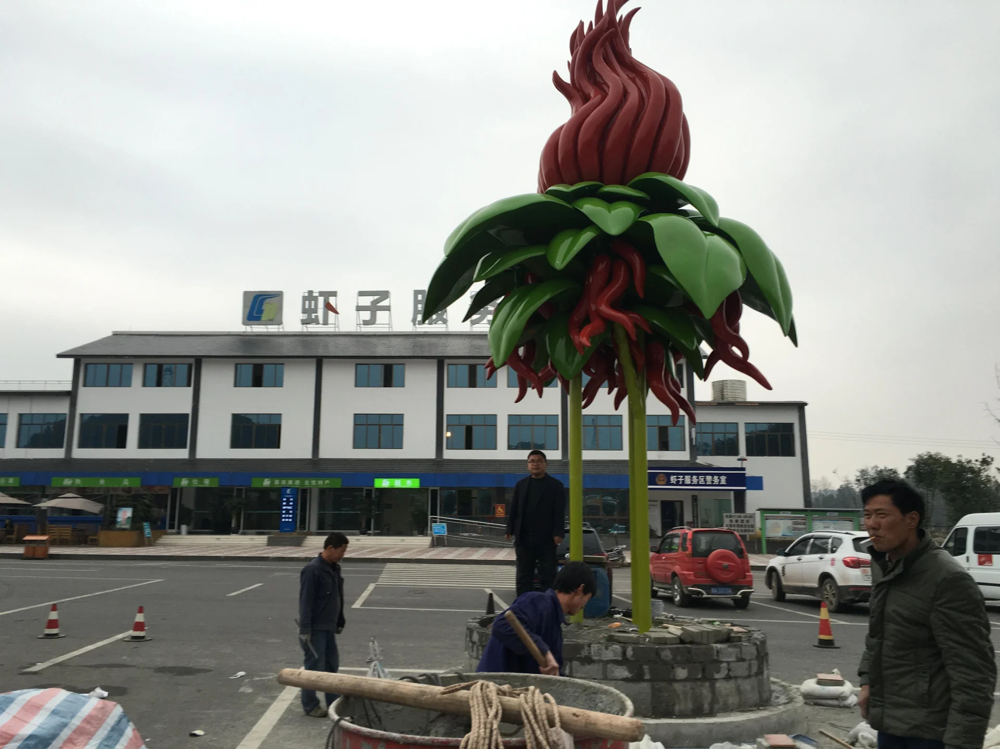
2016年位于贵州虾子服务区的地域文化主题雕塑，以当地辣椒产业为母题，打造高速公路服务区地标打卡点。
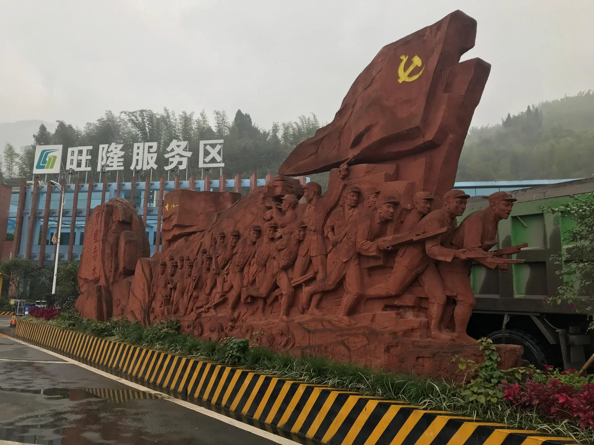
2016年红色文化纪念雕塑，艺术呈现红军四渡赤水的历史场景，服务于红色旅游与爱国主义教育节点。
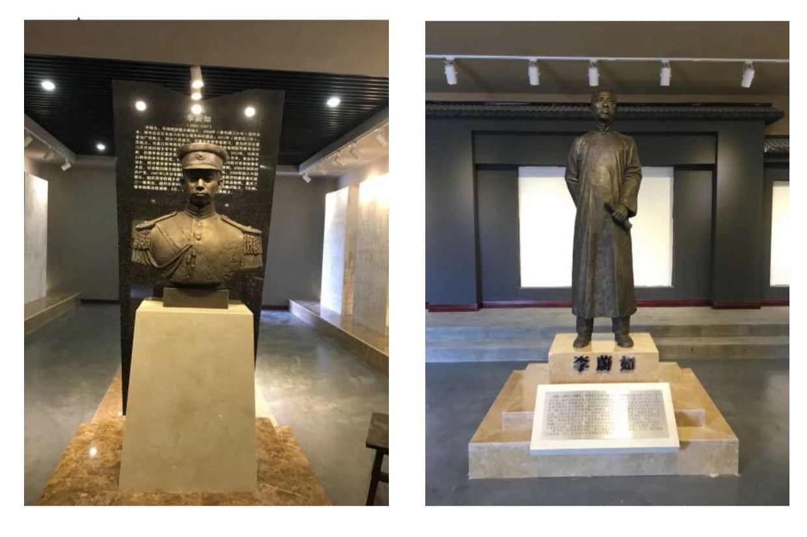
2016年为涪陵农民运动纪念馆创作的展陈雕塑，还原地方农民运动历史群像，属文博展陈类公共艺术。

2016年位于贵州印江的军民共建主题纪念雕塑，以写实质感塑造军民一家亲的叙事场景。
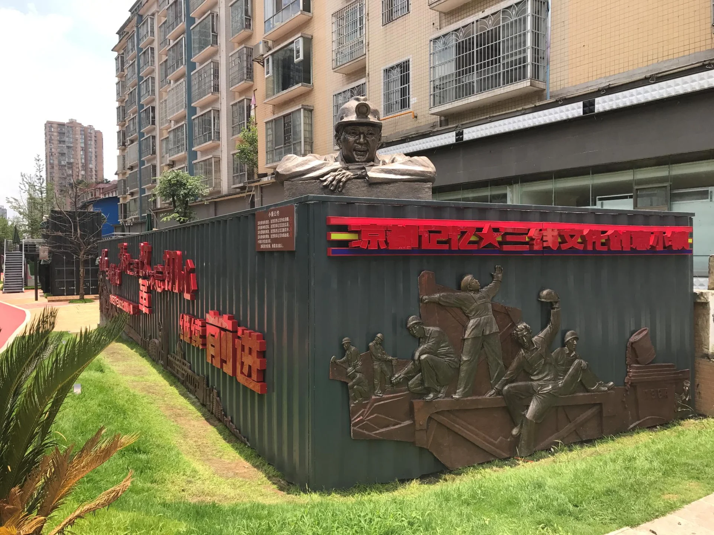
2017年六盘水三线文化创意小镇核心雕塑群，含《火车拉来的城市》《煤都》《滑雪雕塑》等，以工业遗产叙事重塑城市记忆。

2018年水城河提级改造公共艺术工程，含《五十六个民族铸铜雕塑》《火车护栏雕塑》等，将河道景观与城市文化融为一体。
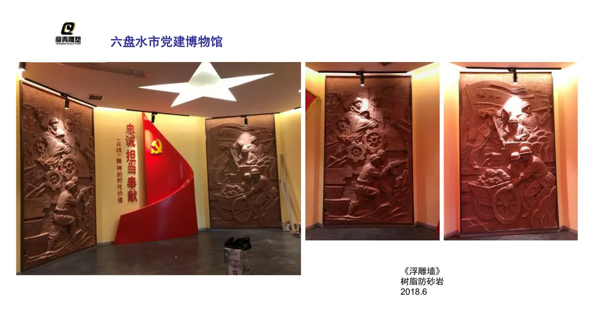
2018年六盘水党建博物馆展陈雕塑，以雕塑语言呈现党建历史脉络，服务于红色教育空间。

2018年配合水城河保护条例宣传创作的公共艺术主题雕塑，将普法叙事与城市滨水空间结合。
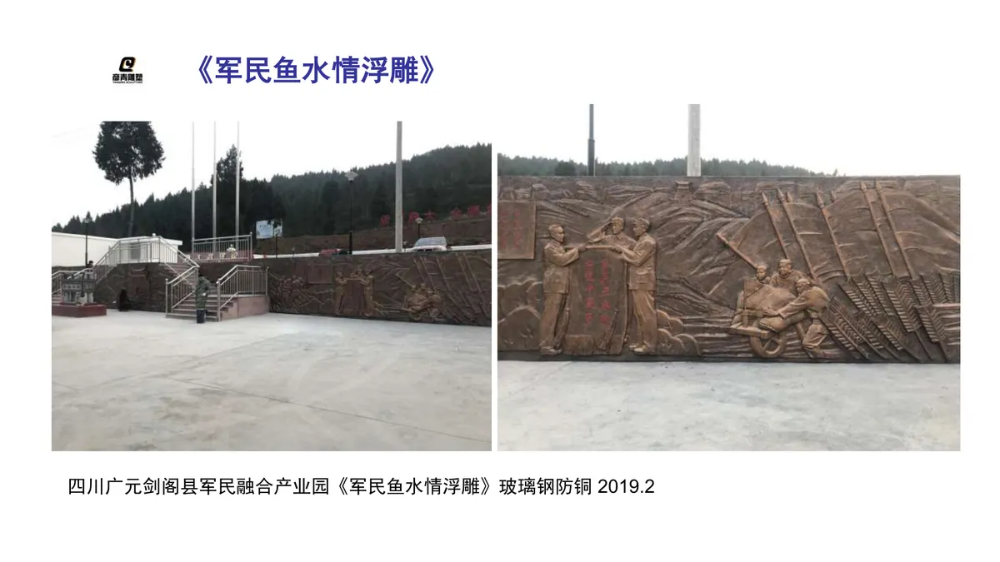
2019年剑阁军民融合产业园《军民鱼水情》主题浮雕，以浮雕叙事展现军民共建的产业文化。

2019年沙坪坝中医院公共艺术雕塑，以中医诊脉意象塑造医疗空间的在地文化识别。

2019年重庆大学建校90周年校庆纪念雕塑，以西方汉白玉名人肖像群像致敬学术传统，立于校园核心区。

2019年璧山红岩革命烈士白深富故居汉白玉胸像，以肖像纪念形式留存红色人物精神。
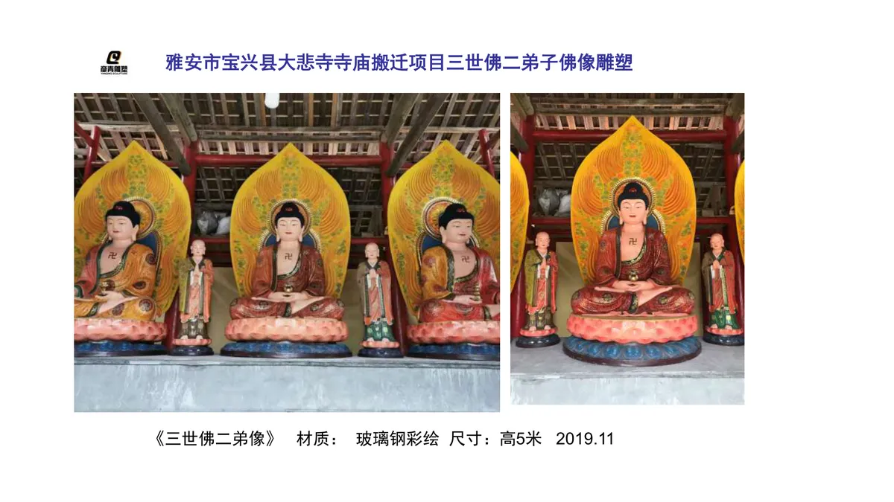
2019年宝兴大悲寺寺庙搬迁项目佛像雕塑，含三世佛与二弟子造像，延续传统佛教造像仪轨。

2020年雅安高颐阙文博公园雕塑项目，以汉代阙文化为源头，塑造地方文博地标的公共艺术场景。
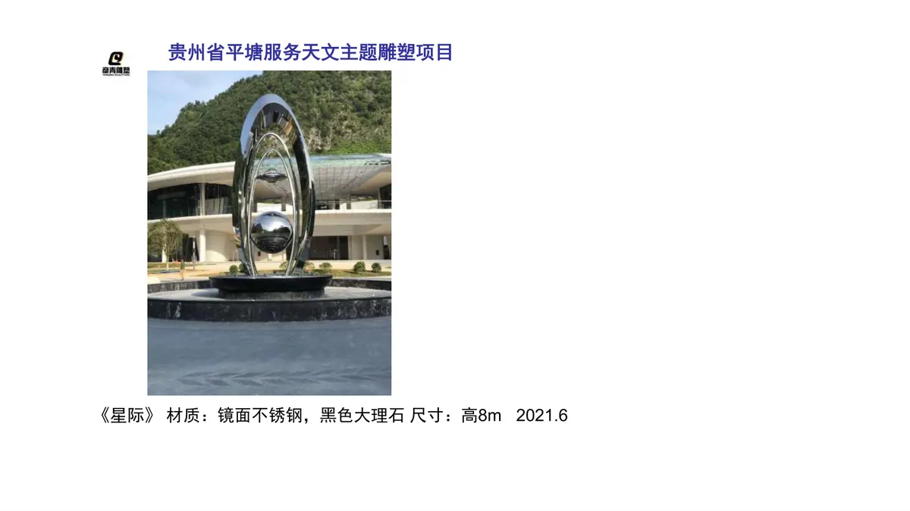
2020年平塘服务区天文主题雕塑，呼应当地天眼（FAST）科普IP，打造交通节点的科技文旅打卡点。
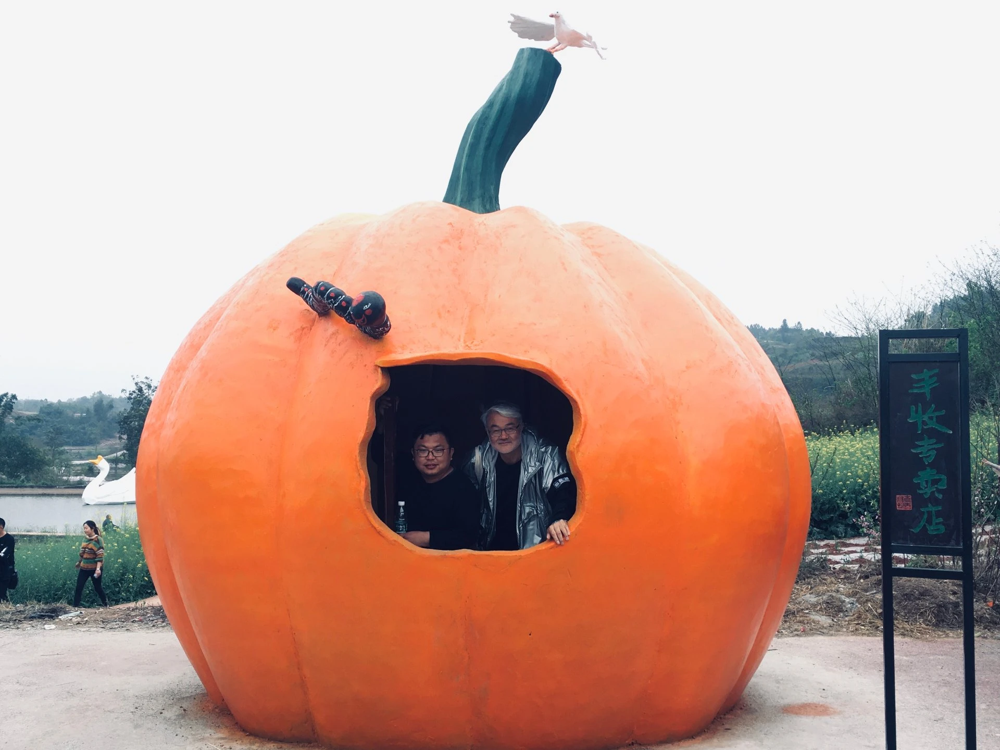
2021年第二届田野双年展参展雕塑《丰收的喜悦》，以乡土叙事语言呈现乡村振兴主题，属当代艺术展览作品。

2021年城开高速公路隧道口水泥浮雕工程，以耐久性材料塑造交通隧道的在地文化界面。

2021年荥经牛背山风景区景观雕塑，融入高山景区自然语境，强化目的地视觉识别。

2021年重庆数据谷数字雕塑景观墙，以现代材料语言呼应数字经济产业园区的科技调性。

2021年广阳岛生态艺术区水景雕塑，将雕塑与水景生态结合，服务于长江上游生态文明展示。

2022年蒙顶山茶诗碑林雕塑项目，以碑刻与雕塑结合呈现茶文化诗意，强化世界茶文化发源地的文旅辨识度。
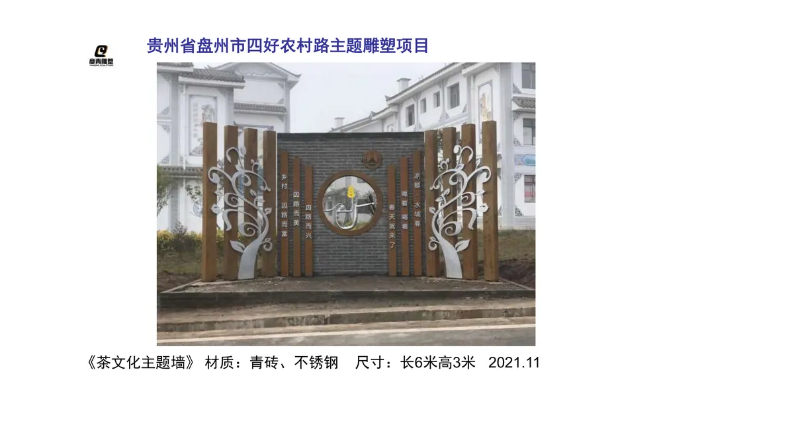
2022年茶文化公园《龙行十八式》雕塑，以非遗茶艺动作为母题，塑造可参与的文旅互动场景。
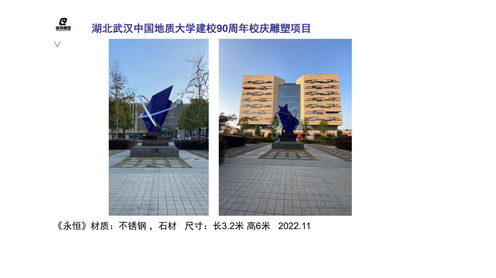
2022年中国地质大学建校70周年校庆纪念雕塑，立于校园核心区，承载校友情感与校史叙事。

2023年雅安金鸡关《川藏零公里，自驾大本营》地标雕塑，标定318国道起点门户，是区域自驾文旅的超级符号。
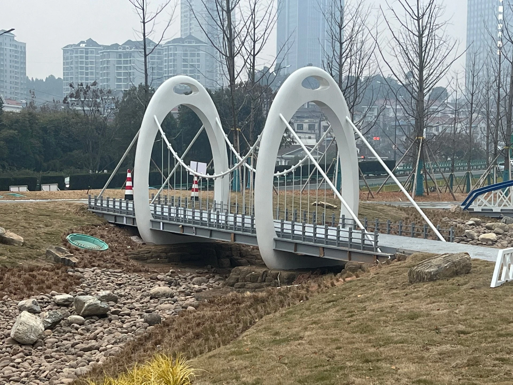
2023年宜昌交通主题公园雕塑项目，以交通建设叙事塑造城市公共艺术空间，跨省级标杆案例。
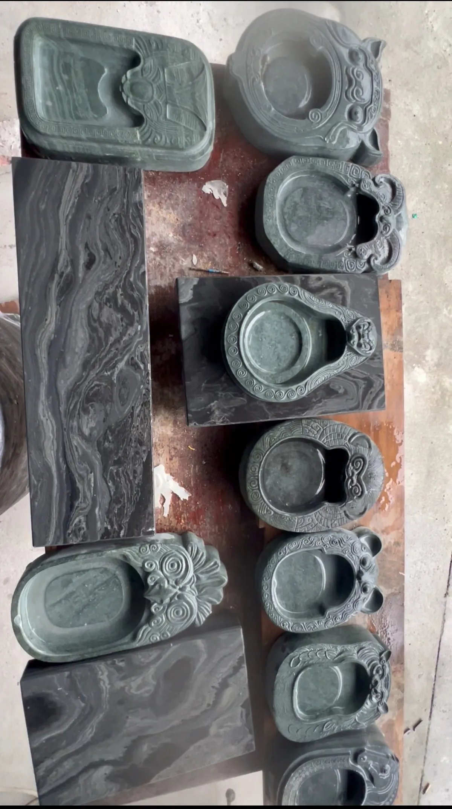
2025年外朗砚代表作《十二生肖砚》，以宝兴外朗石（市级非遗石材）雕刻十二生肖，限量8组，属高端文旅文创与政务礼品。
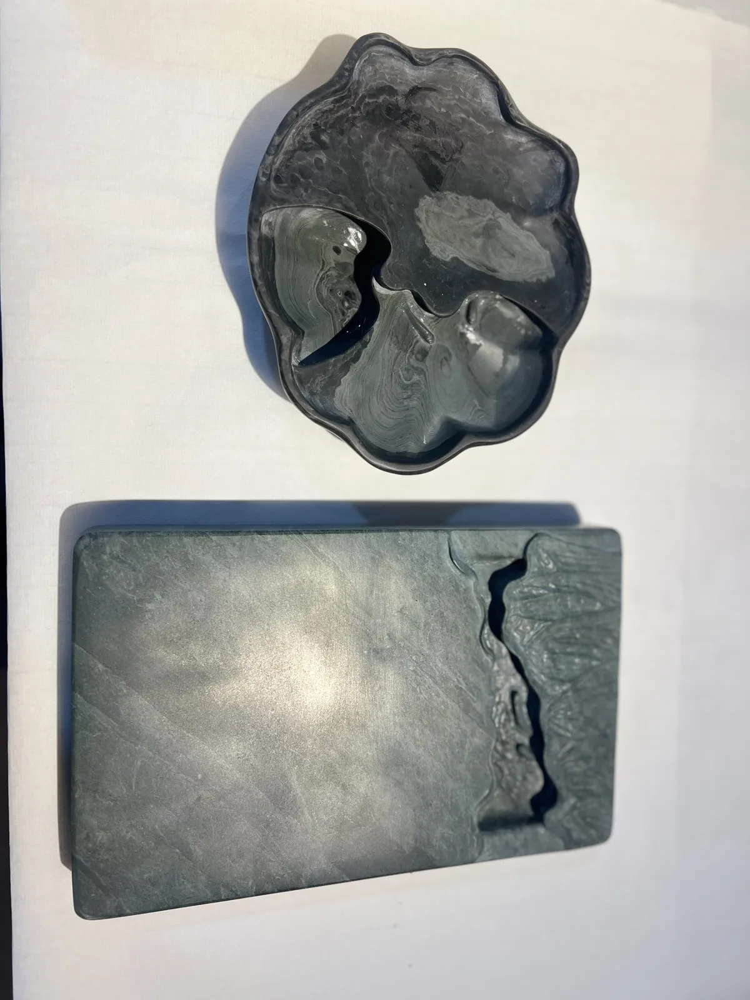
2025年外朗砚《鱼戏莲叶间》系列，取汉白玉/外朗石温润质地，方砚圆砚成套，限量30套，宜赏宜用。

2025年外朗砚《窗外》，以极简开窗意象雕刻，体现非遗传承人的当代审美转化。

2021年当代石雕作品《观·心》，取河道鹅卵石『黄皮黑胆』原生结构，剥离外皮呈现内在棱角，体现『内心依然有棱有角』的创作理念。
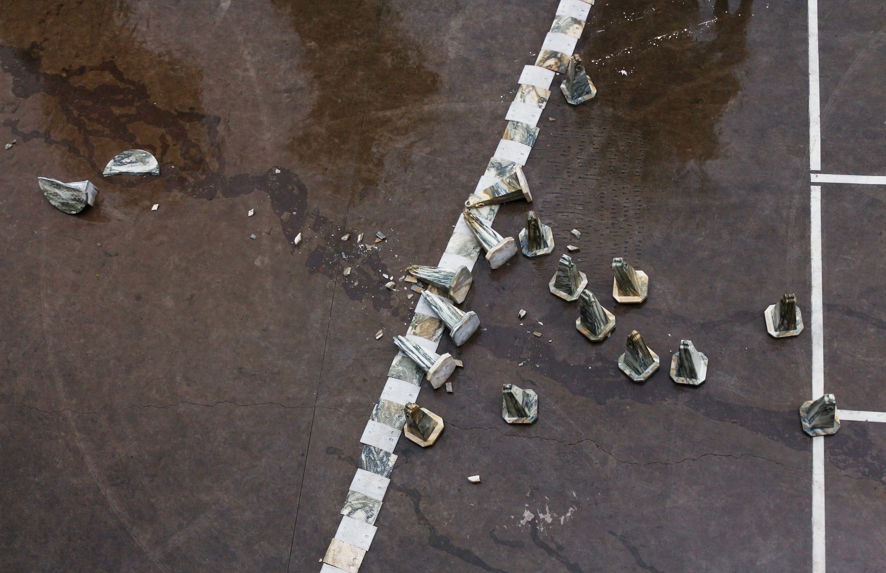
2013年毕业创作《似是而非的艺术》，以宝兴大理石为材，探讨材料真实与表象的关系，是早期创作脉络起点。

2021年跨媒介作品《对话》，以陨石、鹅卵石、香樟木、镀锌管并置，呈现自然物与人工物的材质对话。
电话：13452355322 ｜ 邮箱：155395593@qq.com
重庆工作室：重庆市沙坪坝区大学城学智路155号
四川基地：四川省雅安市宝兴县灵关镇河口村（穆坪砚 · 外朗石原产地）
政府文旅 / 城投平台 / 景区项目，欢迎来函索取带预算区间与工艺说明的完整案例集 PDF。